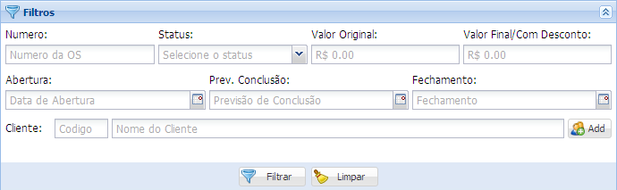

Para facilitar a busca por ordens de serviço essa janela já possui um filtro do qual pode escolher entre diversas opções.
No campo Cliente é possível realizar buscas genéricas utilizando caracteres especiais
Para mostrar nomes com um inicio ou termino comum basta acrescentar o caractere “%” entre a busca desejada. Por exemplo:
Se for digitado THIA% o resultado retorna todos os nomes que começam com "THIA", o mesmo vale para TH%O onde trará todos os nomes que começarem com "TH" e terminarem com "O".
Outro caractere especial é o “_”, ele representa apenas UM caractere. Por exemplo:
Se for digitado TH__GO irá retornar como resultado todos os nomes que começarem com "TH" e tiverem dois caracteres no meio e terminarem com "GO", nesse caso poderiam ser THIAGO, TH!@GO, THMMGO, TH12GO, etc.